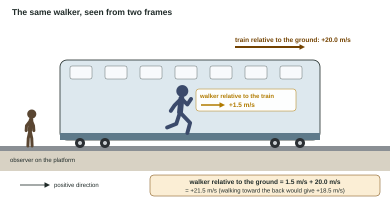

Reference Frames and Relative Motion
Every velocity is measured relative to a reference frame.
Part 1 · Hook
Why this matters
Part 2 · Before you start
What this builds on
Part 3 · Prerequisite check
Quick check before you start
1. Taking east as positive, which is the velocity of a car moving west at 15 m/s?
- −15 m/s
- +15 m/s
- 0 m/s
- +30 m/s
Show the answer
West is the negative direction.
- Correct: −15 m/s:
- +15 m/s:
- 0 m/s:
- +30 m/s:
2. What is the vector sum of +4.0 m/s and −1.5 m/s along a line?
- +2.5 m/s
- +5.5 m/s
- −5.5 m/s
- −2.5 m/s
Show the answer
Add the signed values: 4.0 − 1.5 = +2.5 m/s.
- Correct: +2.5 m/s:
- +5.5 m/s:
- −5.5 m/s:
- −2.5 m/s:
3. A cart's velocity goes from 2.0 to 3.0 m/s in 2.0 s. What is its acceleration?
- 0.50 m/s²
- 1.0 m/s²
- 2.5 m/s²
- 2.0 m/s²
Show the answer
a = Δv/Δt = 1.0 ÷ 2.0.
- Correct: 0.50 m/s²:
- 1.0 m/s²:
- 2.5 m/s²:
- 2.0 m/s²:
Part 4 · See it
See it first

Part 5 · Step by step
How it works, step by step
- Two observers move relative to each otherthey measure different velocities for the same object
- The object moves at v relative to a frame that moves at V relative to the groundits velocity relative to the ground is v + V (signed, along one line)
- You swap which observer is measuringthe relative velocity flips sign: if B moves at +3 m/s relative to A, A moves at −3 m/s relative to B
- The two frames move at a constant velocity relative to each otherthe same velocity is added at every instant, so both measure the same acceleration
Part 6 · Key ideas
Key ideas
- A reference frame is the observer's point of view, with a coordinate system that moves with the observer. "At rest" means at rest relative to some frame.
- Relative velocity along a line: v(object, ground) = v(object, frame) + v(frame, ground). Give each velocity its sign.
- To find a velocity relative to a moving observer, subtract the observer's velocity: v(A, B) = v(A, ground) − v(B, ground).
- Frames moving at a constant velocity relative to each other measure the same acceleration, because the added velocity cancels in Δv.
Part 7 · Misconception
A common mistake
The wrong idea: The train's velocity only matters to people on the platform; a passenger walking in the aisle has her own speed of 1.5 m/s, period.
What actually happens: Her velocity depends on who measures it: 1.5 m/s relative to the train, 21.5 m/s relative to the ground when the train moves at 20.0 m/s. Every velocity needs a frame, and the frames are linked by adding velocities.
Part 8 · Check yourself
Check yourself
Exam-style questions. Anything you miss goes into your review queue.
Diagram
A moving walkway at an airport
An airport walkway 48 m long moves to the right at 1.2 m/s relative to the floor. Ana walks to the right on it at 1.8 m/s relative to the walkway. Ben stands still on the walkway. Cara stands on the floor beside it. Right is positive.
Key: orange arrow, the walkway's velocity relative to the floor; gold arrow, Ana's velocity relative to the walkway. Arrow lengths are to scale.
1. What is Ana's velocity relative to the floor, as Cara measures it?
Type a number in m/s.
Show the answer
Velocity relative to the floor = velocity relative to the walkway + velocity of the walkway relative to the floor = 1.8 m/s + 1.2 m/s = +3.0 m/s.
- Answer: 3.0 m/s
2. What is Ana's velocity as Ben measures it?
- +3.0 m/s
- +1.2 m/s
- Zero, because they are both on the walkway
- +1.8 m/s
Show the answer
Ben is at rest relative to the walkway, so in his frame Ana moves at her walking velocity, +1.8 m/s.
- +3.0 m/s: That is her velocity relative to the floor. Ben is moving with the walkway, not standing on the floor.
- +1.2 m/s: That is the walkway's velocity relative to the floor, which Ben shares.
- Zero, because they are both on the walkway: Ben stands still on the walkway while Ana walks on it, so she moves away from him.
- Correct: +1.8 m/s: Right: Ben moves with the walkway, so he sees only her motion relative to the walkway.
3. What is Cara's velocity as Ben measures it?
- +1.2 m/s
- Zero, because Cara is standing still
- −1.2 m/s
- −3.0 m/s
Show the answer
If B moves at +1.2 m/s relative to C, then C moves at −1.2 m/s relative to B. Swapping the observer flips the sign.
- +1.2 m/s: From Ben's frame, Cara moves the opposite way to how he moves relative to her.
- Zero, because Cara is standing still: Cara is at rest relative to the floor, not relative to Ben.
- Correct: −1.2 m/s: Right: Ben moves right at 1.2 m/s relative to the floor, so to him the floor and Cara move left at 1.2 m/s.
- −3.0 m/s: That would be relative to Ana. Ben moves only with the walkway, at 1.2 m/s.
Data table
Three vehicles on a straight highway
A truck, a car and a motorcycle travel along a straight highway. East is positive. The table gives each one's velocity relative to the road.
| Vehicle | Velocity relative to the road (m/s) |
|---|---|
| Truck | +22 |
| Car | +29 |
| Motorcycle | −17 |
4. What is the car's velocity relative to the truck?
Type a number in m/s.
Show the answer
v(car, truck) = v(car, road) − v(truck, road) = 29 m/s − 22 m/s = +7.0 m/s. From the truck, the car pulls ahead eastward.
- Answer: 7.0 m/s
5. What is the motorcycle's velocity relative to the truck?
Type a number in m/s.
Show the answer
v(moto, truck) = v(moto, road) − v(truck, road) = −17 m/s − 22 m/s = −39 m/s. From the truck, the oncoming motorcycle approaches at 39 m/s.
- Answer: -39 m/s
6. You sit in a train at rest in a station and see the train beside yours start to move forward. A moment later you realize it is your own train moving backward. Why could you not tell at first?
- Your train was moving too slowly to have a velocity
- The other train had a larger velocity than yours
- Motion is visible to a person on the ground, not to a passenger
- You saw relative motion, and either train moving looks the same
Show the answer
A velocity is measured relative to a reference frame. Seeing only the other train, you measure its velocity relative to your train, which is the same whichever train moves.
- Your train was moving too slowly to have a velocity: Any motion is a velocity; the issue is which frame you measure it in.
- The other train had a larger velocity than yours: Neither velocity was larger in a way you could see; you saw only how they moved relative to each other.
- Motion is visible to a person on the ground, not to a passenger: Any observer can measure motion; each measures it relative to their own frame.
- Correct: You saw relative motion, and either train moving looks the same: Right: from your seat, you can only see the other train's motion relative to yours.
Part 9 · Summary
Summary
Part 10 · Up next
What comes next
Part 11 · Connections